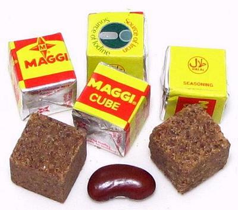

Maggi® Cubes - African

You will find Maggi Cubes called for in almost every West African recipe
composed in recent times. These cubes are used incessantly in both
restaurants and homes - except in regions too poor to afford them. They
have almost completely replaced the traditional flavorings of Ogiri
(fermented sesame seeds or other oil seeds) and Sumbala / Dawadawa
(fermented locust bean seeds). While convenience is a major issue here,
another major issue is the increasing difficulty of obtaining the locust
bean seeds needed for Sumbala, and their ever increasing cost.
Additionally, there is Nestlé's ubiquitous and bright red and
yellow advertising of the product.
These cubes are rather small, about 0.55 inches / 14 mm on a side.
Ingredients: Iodized Salt, Sugar, Flavor Enhancers
(Monosodium Glutamate, Disodium Inosinate, Disodium Guanylate),
Corn Starch, Vegetable fat (Palm), Hydrolysed Soya Beans, Water,
Color (Ammonia Caramel), Onion, Ferric Pyrophosphate, Emulsifier
(Soya Lecithin), Spice Extracts (White Pepper, Chili, Clove)
Flavoring, Yeast Extract.
More on Sauces & Condiments
Buying:
These cubes are imperfectly available in North
America, but may be found in some African specialty stores, or can be
ordered on-line. The photo specimens were purchased for 2018 US $8.95 for
100 cubes (14-1/4 ounces), including shipping from England.
Substitutes:
Good Flavorful Stock
is the best substitute. See our
page Stock / Broth - General
Method for how to make it and how to have it conveniently on
hand.Maggi Seasoning:
This
bottled seasoning is available worldwide, including North America. About
1/2 tablespoon per Maggi Cube will do. We find that bottled in China to
be closer in flavor and color than that bottled in Mexico (different
ingredients).Sumbala / Dawadawa:
This is one of the flavorings Maggi Cubes replaced. Traditionally
made from Locust Bean seeds, it is now often made from Soybeans, which
are far more available and easier to work with. This version is almost
identical to Burmese Shan
Tua Nao, for which we have an easy to make recipe.Chinese Fermented Black Beans:
These are also considered a good substitute, and available in
any Asian market in North America, as well as many regular supermarkets.
Ogiri:
This is another flavoring replaced by
Maggi Cubes. It is traditionally Sesame Seeds boiled and fermented
wrapped in a banana leaf or other native leaf. Today it is often made
from less expensive oil seeds like Egusi or Fluted Pumpkin. We hope to
have a recipe and write-up soon. This product is reputed to be very
smelly.
sa_maggcbz 180414 - www.clovegarden.com
©Andrew Grygus - agryg@clovegarden.com - Photos
on this page not otherwise credited © cg1
- Linking to and non-commercial use of this page permitted